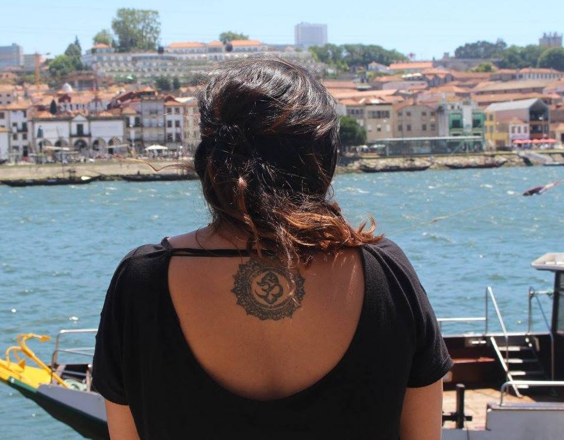

I’m currently studying medicine as I’ve always had an interest for science. Work experience pre-university at Astrazeneca, Christie care homes and I learnt I liked the side that involved looking after someone. I looked into nursing but i didn’t like it. Now if I think about it, I think I would really like dentistry. When I do clinical experience, visiting the GP or the hospital, hands on - how my knowledge applies, and it comes together like a jigsaw. University is very textbook and lecture based. Also the anatomical side, which very few degrees have the chance to do, we work through each body system per week which I find very unique about my course. 50/50 ratio of men and woman, I have never felt singled out as a woman, for example in consultation skills, sexual health/periods/chest examinations - noticed that men find it more difficult to navigate, and being a woman there is more of an advantage to that part. Fewer females that are consultants. Women are empowered to be in STEM, female directed and oriented subjects, more are encouraged to do engineering, even though it is not 50/50 split, there is a pathway for women towards more traditionally masculine based subjects. Majority of my friends to study STEM subjects, my course is structured around PBL learning as opposed to heavy lecture based learning, I have 6-8 lectures with a case including anatomy, psychology and science, i have a lot more independent learning time than my friends do. Medicine is very broad, i have friends in engineering and science, I learn new concepts from physics often. We revise very differently, they get tutorials and application questions. Linking my anatomy to real life scenarios, impart some understanding and knowledge on my friends problems. Over the past year, self improvement kick, out of my comfort zones, philosophy, religions, my own cultural heritage, giving me a lot more understanding and empathetic, so i feel more happier with myself. I do not have one specific inspiration, I want factors from different people, I want to be as strong and outspoken as serena williams, charismatic as alan waters, courageous as amelia howards, what inspires me the most is that they broke through the essential glass ceiling, i like people who have set their own president, who question everything and have formed their own opinion. It’s very easy to go along with the flow, I like women who can make their own decision and have faith in what they do. Life will always find something to put you down and hit rock bottom, the most important thing is about how to overcome it, bury themselves in work, new motivation in life. But it makes people stronger once they come out of it. This summer I am going to uganda, culture and healthcare, I have never travelled anywhere in africa and I hope it is a life changing experience. I want to be able to a headstand, I want to be more flexible, I am really looking forward to my speciality as I am quite indecisive right now. Happy and successful in my eyes. I want to become someone who is more sociable, and in the past year I have been learning spanish and I want to continue that to the next level. I want to have a lot more experiences, skydiving and bungee jumping.